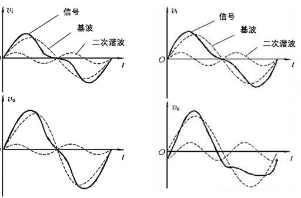
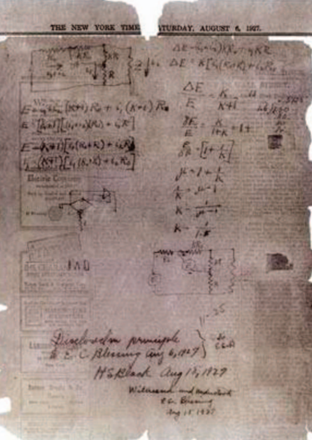

模拟电子技术核心灵魂

1927 — 至今
从渡轮灵感出发，构建现代电子基石
20世纪初，真空三极管成功实现信号放大，成为长途有线通信的核心器件。但早期放大器存在致命缺陷：高增益伴随严重非线性失真。
多级级联放大后，语音信号畸变、噪声叠加，跨洲、跨洋的远距离通话音质极差，当时技术始终无法突破通信距离与音质的矛盾。

哈罗德·史蒂芬·布莱克，AT&T贝尔实验室工程师。在通勤渡轮上突发灵感，彻底改变放大器设计思路。
他放弃“制造绝对完美的线性放大器”的传统思路，提出：将输出信号反向馈入输入端，实现自我纠错，当场在《纽约时报》空白处绘制了简单的框图并进行了初步数学推导。

1927年12月实验验证构想可行，但业界普遍担忧：负反馈极易引发自激振荡，导致放大器失效。该专利历经9年审核，1937年才正式授权。
提出奈奎斯特稳定判据，通过开环频率特性判定闭环系统稳定性，从理论上解决振荡问题。
发明波特图，用幅频、相频曲线直观分析电路特性，成为负反馈放大器标配设计工具。
1930-1931年美国新泽西长途电话现场测试大获成功；1934年布莱克发表经典论文《稳定反馈放大器》，系统完善整套理论体系。
威廉逊放大器问世，首款大规模商用负反馈音频功放，失真度大幅降低，正式开启 Hi-Fi 高保真时代，成为电子管功放标杆。
二战期间用于火控系统放大器，大幅提升装备精度；战后应用于精密振荡器、信号发生器，间接推动惠普等电子企业发展。
鲍勃·维德拉设计首款单片集成运放 μA702，负反馈成为运算放大器核心工作原理，模拟计算、信号处理进入集成电路时代。
应对长途通信失真问题，支撑起横跨大陆、大洋的现代电话网络。
晶体管替代笨重的真空管，电路体积、功耗大幅下降，工作频率进一步提升。负反馈设计适配性更强，广泛用于收音机、电视、工业控制电路。
负反馈被深度集成到各类模拟芯片中：通用运放、电源芯片、射频放大器、传感器调理电路等，成为芯片内部标配结构。
时至今日，负反馈仍是模拟电子技术四大核心（放大、滤波、振荡、直流电源）的基础知识点。从消费电子、汽车电子、医疗设备到航空航天，现代电子系统几乎全部依赖负反馈技术。